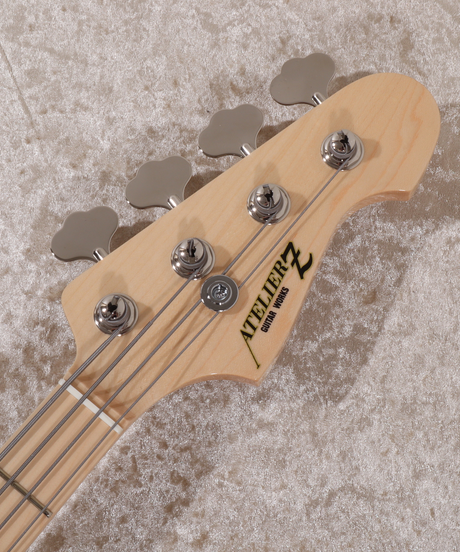
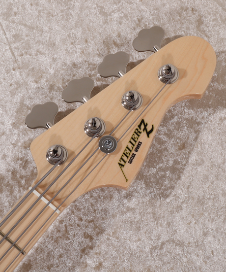

王道のジャズベースタイプが持つ、あらゆるジャンルにマッチするサウンドはそのままに、プリアンプによる積極的なサウンドメイクと日本人に合わせて作られたネックシェイプによって、"手に取ったその瞬間から即戦力"となるハイ・スタンダードなモデルです。
- Body：Ash2P
- Scale：34"
- Neck：Maple1P
- Finger board：Maple
- Flet：22F
- Tuning key：SANS 450
- Controls：Master/3EQ
- Pickup：BF original EB4
- Bridge：Kuroda F9
- Color：Natural
- Black
- Vintage Red
全ての仕様はより詳細なオーダーメイドが可能です。お見積りにつきましてはCONTACTよりお問い合わせください。